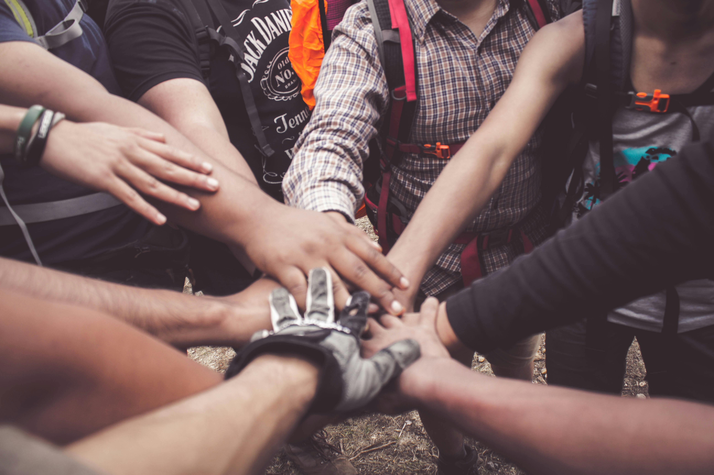

Our History

Founded in Unity
Collective Strength: ISA was built on the principle that communities thrive when people pool their resources, skills, and voices together. Unity is not just symbolic. It’s the foundation of resilience.
Inclusive Participation:Every member, regardless of background, is encouraged to contribute. This ensures that support is not top-down but shared across the community.
Shared Responsibility: By standing together, families and youth take ownership of their development, making progress sustainable rather than dependent on external aid.

Community Support
ISA’s model shows that community support isn’t just about immediate relief. It’s about breaking cycles of poverty and building resilience. By combining emotional solidarity (help during life events) with practical empowerment (skills, jobs, loans), they create a holistic safety net that uplifts entire communities.